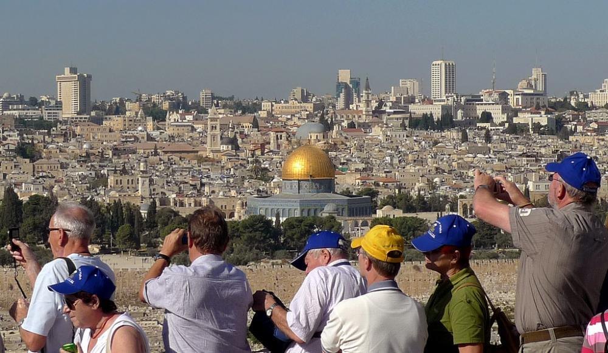

Бесплатные туры
Такие экскурсии еще называют Free Walking Tours — это бесплатные туры и пешеходные маршруты, которые можно найти практически во всех столицах и крупных городах мира. Бесплатные туры — в первую очередь инициатива волонтеров и неравнодушных к своему городу жителей. Но это совсем не значит, что экскурсию вам будет проводить аматор, который и истории толком не знает, и завести может не пойми куда.
Нет, все совсем не так. Все гиды и экскурсоводы являются профессионалами своего дела, проходят специальное обучение, владеют английским языком. Зачастую такие экскурсии намного интереснее и насыщеннее, чем стандартные туры, так как главная задача организаторов — не заработать денег, а влюбить в свой родной город. А потому маршруты бывают самые разнообразные и очень интересные.
Находить бесплатные экскурсии совсем не сложно — существуют специальные сайты, на которых вы можете ознакомиться с предложенными маршрутами и зарегистрироваться на них. Самые популярные:
Собираясь на бесплатную экскурсию, не забудьте уточнить несколько немаловажных моментов:
Место проведения — заранее уточните место, откуда начинается экскурсия и где она заканчивается, причем узнайте не только название улицы/площади, но и номер дома или же какие-то опознавательные знаки места назначения. И не забудьте уточнить время завершения: если вы не очень хорошо ориентируетесь в городе, а прогулка не закончится засветло, то вы должны иметь хотя бы минимальное представление о том, как потом добраться к отелю или апартаментам.
Условия экскурсии
Преимущественно все экскурсии, организованные волонтерами, абсолютно бесплатны, но бывают случаи, когда организаторы заранее указывают символическую суму в размере нескольких долларов или евро в качестве благотворительности для поддержания проекта. Если же это водные экскурсии или на транспортном средстве, то порой организаторы просят деньги на топливо.
Количество участвующих
Оно всегда ограничено. Поэтому, если вы путешествует с кем-то или большой компанией, узнайте заранее, сколько мест в наличии, дабы никого не оставить «за бортом».